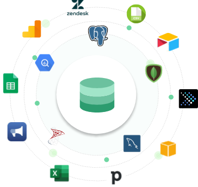

2.1 데이터 엔지니어가 다루는 데이터#
데이터는 어디서 발생될까?#
IT서비스가 이루어지는 모든곳에서 데이터는 발생됩니다.
우리가 바라볼 수 있는 데이터 원천은
서비스 DB,API,Object Storage등 다양합니다.서비스DB는 MySQL과 같은 RDBMS일수도, MongoDB와 같은 NoSQL DataBase일수도 있습니다.API는 사내에 존재하는 API일수도, 구글 혹은 통계청 과 같은 외부에서 제공하는 API일수도 있습니다.Object Storage는 AWS S3 일수도, 사내에 존재하는 File System일수도 있습니다.
데이터의 종류별 특징은 어떻게 될까?#
Log#
특정 시스템 내에서 발생하는 이벤트에 대한 기록을 담고 있습니다.
반정형 데이터라고 할 수 있고 시간정보가 포함됩니다. Event Data를 파일에 남기게되면 일반적으로 로그라고 부르게됩니다.
로그는 이벤트에 대해서 누가(Who), 무엇을(What event), 언제(When) 실행했는지 세 가지 정보를 담고 있어야 합니다.
Image, Video, GIF…#
일반적으로 파일 크기가 크고 RDBMS에 넣지 않는경우가 많습니다. (Serialize를 통해 넣을수는 있습니다.)
처리하게 된다면 URI만 RDBMS에 저장하고 추가 메타데이터들만 넣게됩니다, 실제 파일은 S3등의 Object Storage에 저장하게됩니다.
Raw File#
기업 외에도 일반적으로 가장 흔히 접하는 데이터의 종류입니다.
Excel, csv, txt, json, xml 등 다양한 포맷이 존재합니다.
Streaming Data#
바로 생성되어 저장되지 않는 데이터는 바로 전송하는 방법이 있습니다.
실시간으로 생성되는 데이터이기 때문에 데이터 유실이 발생할 수 있습니다.
DB Data (OLTP, OLAP)#
사용 중인 서비스 또는 애플리케이션의 상태를 저장한 데이터를 보유하고 있습니다.
대용량 조회로 CPU, I/O비용을 지나치게 많이 사용하게 된다면 다른작업에 영향이 미칠 수 있음을 고려하여야 합니다.
조회시 쿼리최적화, 인덱싱, 병렬처리 등을 적절히 고려하여야 합니다.
대부분의 경우 application DB은 OLTP(online transaction processing) DB에 해당합니다.
IoT Device Data#
MQTT(MQ Telemetry Transport)등의 오버헤드가 작은 프로토콜로 데이터를 전송한다는 특징이 있습니다.